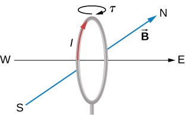
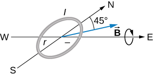

![A schematic of a d c motor consisting of a magnet with a horizontal gap, a power supply with leads attached to brushes, an a wire is bent into a rectangular loop. The ends of the wire are attached to contacts that connect to the brushes of the power supply when the loop is horizontal. When the loop is vertical, they align with the gap between the contacts. The north pole of the magnet is on the left, the south pole on the right. Figure a: The loop is horizontal and the brushes make contact with the loop. A clockwise (looking down) current flows through the loop, so the current in the left segment of the loop flows into the page, and the current in the right segment flows out of the page. The magnetic force on the left segment is down, and on the right segment is up. The loop rotates counterclockwise (looking into the page.) Figure b: The loop is vertical. The brushes are not in contact with the loop. No current flows and no forces are exerted.](CNX_UPhysics_28_05_VacuumMot.jpg)
By the end of this section, you will be able to:
Motors are the most common application of magnetic force on current-carrying wires. Motors contain loops of wire in a magnetic field. When current is passed through the loops, the magnetic field exerts torque on the loops, which rotates a shaft. Electrical energy is converted into mechanical work in the process. Once the loop’s surface area is aligned with the magnetic field, the direction of current is reversed, so there is a continual torque on the loop ([link]). This reversal of the current is done with commutators and brushes. The commutator is set to reverse the current flow at set points to keep continual motion in the motor. A basic commutator has three contact areas to avoid and dead spots where the loop would have zero instantaneous torque at that point. The brushes press against the commutator, creating electrical contact between parts of the commutator during the spinning motion.
In a uniform magnetic field, a current-carrying loop of wire, such as a loop in a motor, experiences both forces and torques on the loop. [link] shows a rectangular loop of wire that carries a current I and has sides of lengths a and b. The loop is in a uniform magnetic field: The magnetic force on a straight current-carrying wire of length l is given by To find the net force on the loop, we have to apply this equation to each of the four sides. The force on side 1 is
where the direction has been determined with the RHR-1. The current in side 3 flows in the opposite direction to that of side 1, so
The currents in sides 2 and 4 are perpendicular to and the forces on these sides are
We can now find the net force on the loop:
Although this result has been obtained for a rectangular loop, it is far more general and holds for current-carrying loops of arbitrary shapes; that is, there is no net force on a current loop in a uniform magnetic field.
![An illustration of a rectangular loop carrying a current I. The current in the loop is counterclockwise when viewed from the positive y direction looking toward the origin. The loop is in a uniform magnetic field, B, that is pointing to the right. Figure a shows a 3 dimensional view of the loop. The top and bottom sides are parallel to the x axis and have length b. The top side is at y=0 and positive z with current in the positive x direction. The bottom side is at a positive y and z=0 and has current in the negative x direction. The remaining two sides have length b. One is at x=0 and has current going up, and one is at positive x and has current going up. These sides are tilted at an angle theta at the top with respect to the z axis. The direction of the unit vector n hat normal to the area of the rectangular loop is shown. The forces on each of the sides are also shown. F 1 is the force on the tilted side at positive x, and points in the positive x direction. F 2 is the force on the top side and points up. F 3 is the force on the tilted side at x=0 and points in the negative x direction. F 4 is the force on the bottom and points down. Figure b shows a side view of the loop, so that we are looking at the y z plane and see only the tilted side, which makes an angle of theta with the vertical at the top. The current is coming out at us at the top of the loop, and the current is going into the page at the bottom. The force F 2 on the top is up, the force F 4 on the bottom is down. The n hat vector points up and to the right, at an angle of theta to the field B. The pivot point O about which we are calculating the torque is shown a distance x from the top of the loop, and a-x from the bottom.](CNX_UPhysics_28_05_loop.jpg)
To find the net torque on the current loop shown in [link], we first consider and Since they have the same line of action and are equal and opposite, the sum of their torques about any axis is zero (see Fixed-Axis Rotation). Thus, if there is any torque on the loop, it must be furnished by and Let’s calculate the torques around the axis that passes through point O of [link] (a side view of the coil) and is perpendicular to the plane of the page. The point O is a distance x from side 2 and a distance from side 4 of the loop. The moment arms of and are and respectively, so the net torque on the loop is
This simplifies to
where is the area of the loop.
Notice that this torque is independent of x; it is therefore independent of where point O is located in the plane of the current loop. Consequently, the loop experiences the same torque from the magnetic field about any axis in the plane of the loop and parallel to the x-axis.
A closed-current loop is commonly referred to as a magnetic dipole and the term IA is known as its magnetic dipole moment Actually, the magnetic dipole moment is a vector that is defined as
where is a unit vector directed perpendicular to the plane of the loop (see [link]). The direction of is obtained with the RHR-2—if you curl the fingers of your right hand in the direction of current flow in the loop, then your thumb points along If the loop contains N turns of wire, then its magnetic dipole moment is given by
In terms of the magnetic dipole moment, the torque on a current loop due to a uniform magnetic field can be written simply as
This equation holds for a current loop in a two-dimensional plane of arbitrary shape.
Using a calculation analogous to that found in Capacitance for an electric dipole, the potential energy of a magnetic dipole is
Forces and Torques on Current-Carrying Loops A circular current loop of radius 2.0 cm carries a current of 2.0 mA. (a) What is the magnitude of its magnetic dipole moment? (b) If the dipole is oriented at 30 degrees to a uniform magnetic field of magnitude 0.50 T, what is the magnitude of the torque it experiences and what is its potential energy?
Strategy The dipole moment is defined by the current times the area of the loop. The area of the loop can be calculated from the area of the circle. The torque on the loop and potential energy are calculated from identifying the magnetic moment, magnetic field, and angle oriented in the field.
Solution
Significance The concept of magnetic moment at the atomic level is discussed in the next chapter. The concept of aligning the magnetic moment with the magnetic field is the functionality of devices like magnetic motors, whereby switching the external magnetic field results in a constant spinning of the loop as it tries to align with the field to minimize its potential energy.
Check Your Understanding
In what orientation would a magnetic dipole have to be to produce (a) a maximum torque in a magnetic field? (b) A maximum energy of the dipole?
a. aligned or anti-aligned; b. perpendicular
(a) By how many percent is the torque of a motor decreased if its permanent magnets lose 5.0% of their strength? (b) How many percent would the current need to be increased to return the torque to original values?
a. so decreases by 5.00% if B decreases by 5.00%; b. 5.26% increase
(a) What is the maximum torque on a 150-turn square loop of wire 18.0 cm on a side that carries a 50.0-A current in a 1.60-T field? (b) What is the torque when θ is 10.9º?
Find the current through a loop needed to create a maximum torque of The loop has 50 square turns that are 15.0 cm on a side and is in a uniform 0.800-T magnetic field.
10.0 A
Calculate the magnetic field strength needed on a 200-turn square loop 20.0 cm on a side to create a maximum torque of 300 N ⋅ m if the loop is carrying 25.0 A.
Since the equation for torque on a current-carrying loop is τ = NIAB sin θ, the units of N ⋅ m must equal units of A ⋅ m2 T. Verify this.
(a) At what angle θ is the torque on a current loop 90.0% of maximum? (b) 50.0% of maximum? (c) 10.0% of maximum?
A proton has a magnetic field due to its spin. The field is similar to that created by a circular current loop in radius with a current of Find the maximum torque on a proton in a 2.50-T field. (This is a significant torque on a small particle.)
(a) A 200-turn circular loop of radius 50.0 cm is vertical, with its axis on an east-west line. A current of 100 A circulates clockwise in the loop when viewed from the east. Earth’s field here is due north, parallel to the ground, with a strength of What are the direction and magnitude of the torque on the loop? (b) Does this device have any practical applications as a motor?
Repeat the previous problem, but with the loop lying flat on the ground with its current circulating counterclockwise (when viewed from above) in a location where Earth’s field is north, but at an angle 45.0° below the horizontal and with a strength of
